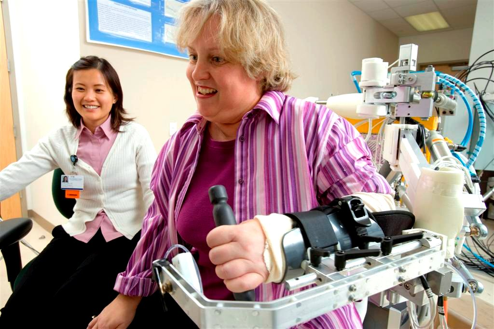

Lab Overview:
Our group develops robotic and mechatronic devices that enhance human movement, motor learning, and rehabilitation. Many of these devices are exoskeletons that attach to the arms or legs of people with a stroke or a spinal cord injury and assist in rehabilitation exercise of arm movements or walking. We have also developed a robotic wheelchair that can assist children and adults with a severe disability in learning how to drive a powered wheelchair. We use these devices to study how people learn motor skills. We are particularly interested in whether training in robotic environments can improve the performance of motor skills outside of the training environment. To guide the design of these environments, we try to understand the computational mechanisms of human motor learning and neural plasticity.
Our Location and Collaborators:
We are a research laboratory in the Department of Mechanical and Aerospace Engineering and Department of Anatomy and Neurobiology . We are affiliated with the Department of Biomedical Engineering, the Reeve-Irvine Research Center for Spinal Cord Injury Research, the California Institute for Telecommunications and and Information Technology (Calit2), and the Institute for Clinical and Translational Science at U.C. Irvine.
Greater Mission:
As part of the the Henry Samueli School of Engineering, we share the greater mission of the School, which is to educate students, at all levels, to be the best engineers and leaders in the nation and world by engaging them in a stimulating community dedicated to the discovery of knowledge, creation of new technologies, and service to society.